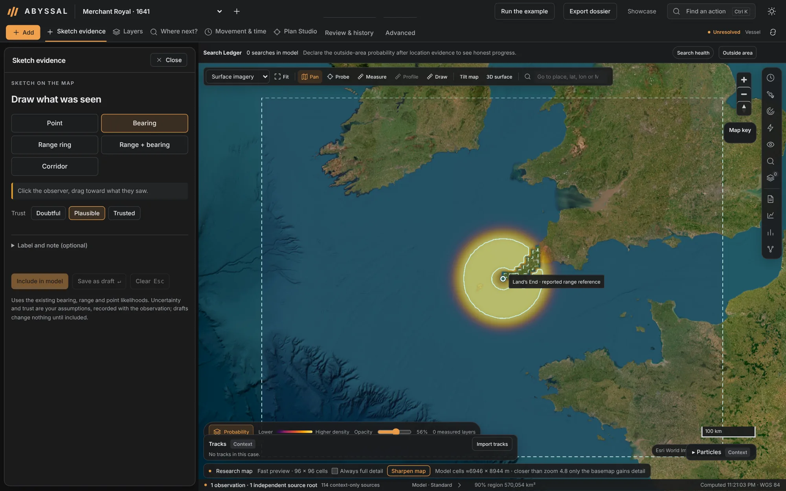
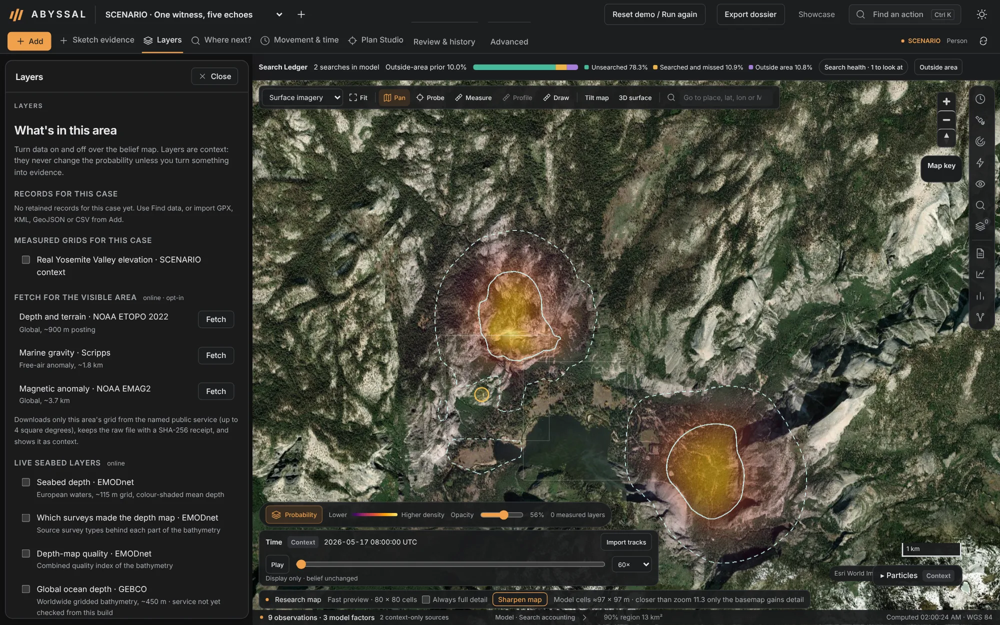
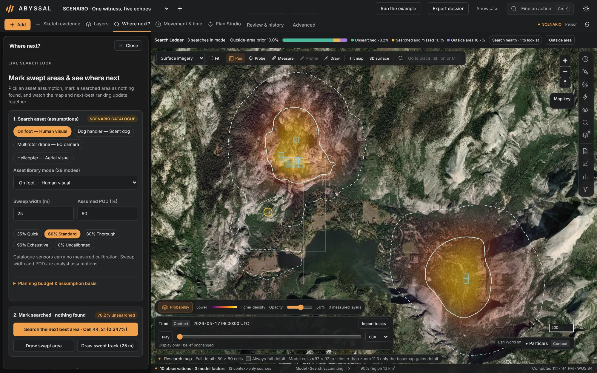
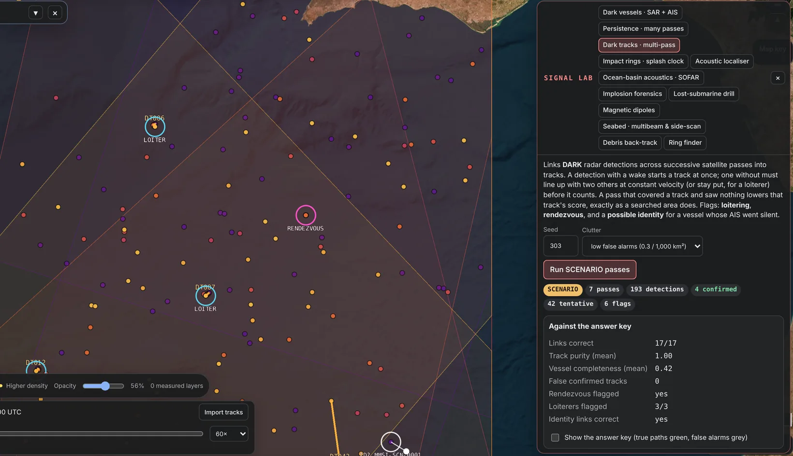
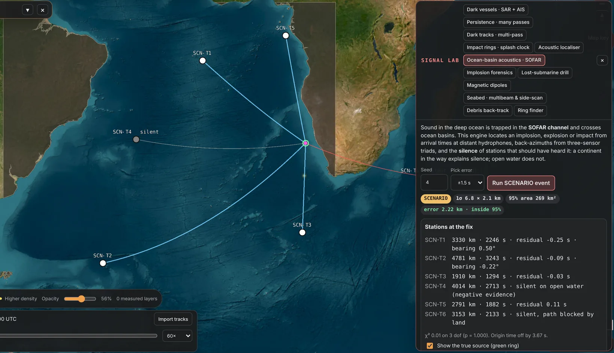
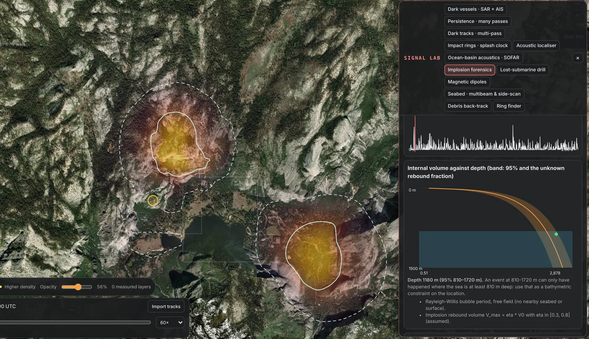
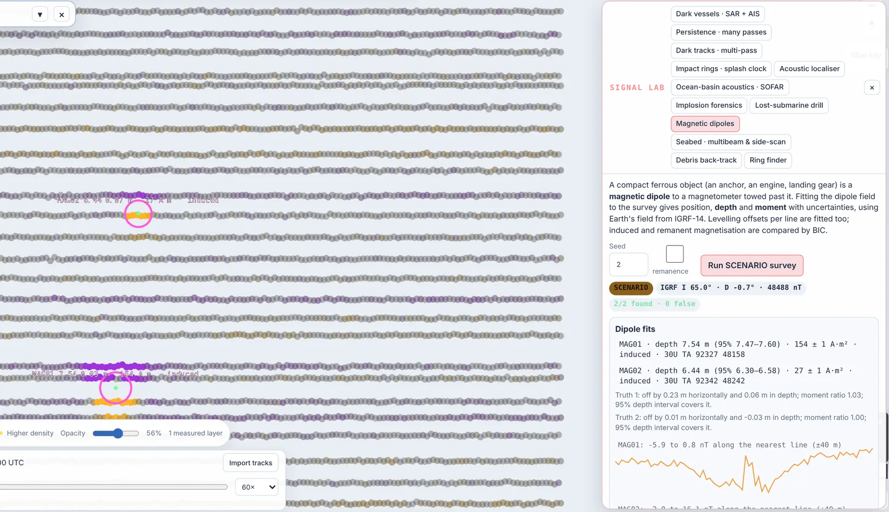
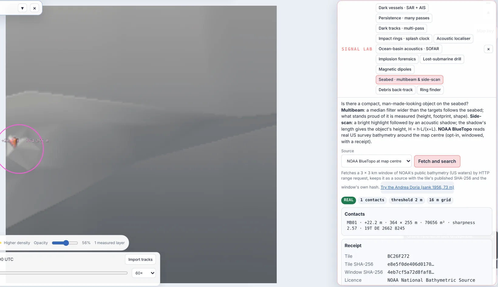
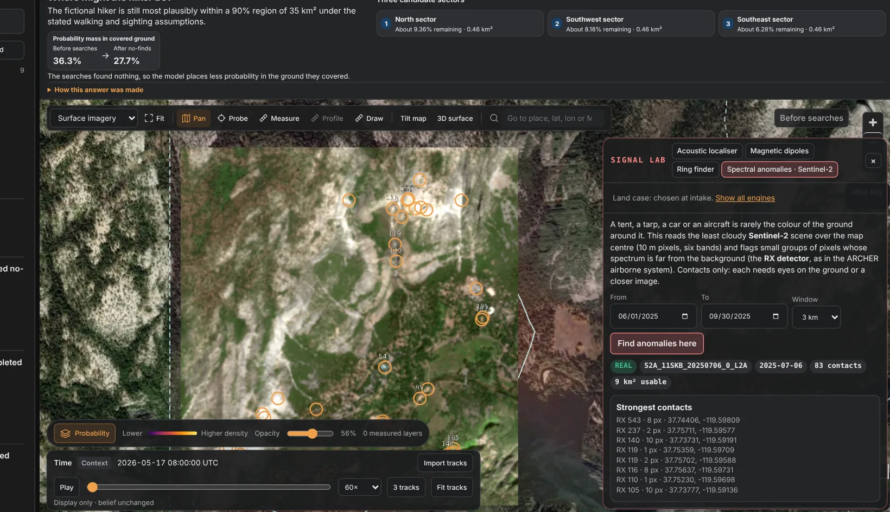
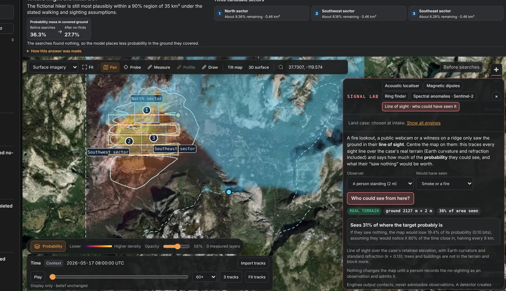

ABYSSAL has two halves. One turns explicit evidence into a probability map. The other turns raw measurements (a radar image, an hour of hydrophone audio, a magnetometer survey) into contacts that a person can review. Sixteen signal engines feed that second half, and every one of them obeys the same contract and comes in through the same gate.
This page is the whole machine on one sheet, then a tour of the engines with real screenshots, the physics each one rests on, and what each one measured when it was tested against an answer key.
The machine, in full
hover or focus any boxtap any boxEvery input arrives with a receipt and an origin tag, REAL or SCENARIO. Measurements rise through the signal engines on the left; claims (a witness, a searched area) rise into the belief engine on the right. The only bridge between the two is the admission gate. Decisions and outputs come out of the top, and the panels down either side are where people lay data on and steer.
One contract, sixteen engines
why very different physics can share one gateA radar wake detector and a bubble-pulse analyser have nothing in common physically. They are still the same kind of thing, because each one answers the same three questions in the same order, returns the same kind of object, and has to pass the same gate. No engine is trusted more than another by default: each is exactly as trustworthy as its calibration says, and no more.
A forward model of the physics: if the target were at \(x\), the data would look like \(d = f(x,\theta) + \varepsilon\). Kelvin wakes, dispersive ring waves, sound in the SOFAR channel, a dipole in Earth's field, leeway drift, an oscillating bubble.
Inference inverts the model: \(\hat x = \arg\max_x \log p(d\mid x,\theta)\) by matched filters, CFAR, Kalman filtering with optimal assignment, Levenberg–Marquardt, cepstra or a likelihood grid, always with an uncertainty attached.
Calibration against an answer key: detection rate, false-alarm rate and interval coverage with Wilson and Poisson bounds. An engine that has not been measured can make contacts, never admissible evidence.
Receipts on everything: inputs by SHA-256, model version, code commit. Every engine's output is a contact that reproduces bit for bit, and only the gate turns a contact into evidence.
Where the maps come from
opt-in, fetched on request, each with a receipt- NOAA ETOPO 2022 (30″)
- GEBCO and EMODnet depth, source and quality
- NOAA BlueTopo (US survey bathymetry, windowed)
- Natural Earth 1:10m coastline
- NOAA EMAG2v3 and BGS magnetic anomalies
- Scripps marine free-air gravity
- Open-Meteo 10 m wind and marine currents
- IGRF-14 main field (computed)
- Sentinel-1 RTC on AWS (windowed range reads)
- NASA GIBS: fires, sea temperature, night lights
- RainViewer observed radar
- OpenStreetMap and OpenSeaMap basemaps
- ADS-B via adsb.lol and OpenSky
- AIS via Digitraffic, and NOAA MarineCadastre day files
- USGS real-time earthquakes
- Satellite element sets (SGP4)
Where people lay data on
every interface writes drafts, never belief

Sketch evidencepoints, bearings, range rings, corridors, area statements

Layersopt-in public data with receipts, context by default Evidence Mapeach source's influence in bits, provenance graph, exact undo
Evidence Mapeach source's influence in bits, provenance graph, exact undo
 Signal Labsixteen engines, SCENARIO answer keys or your own data
Signal Labsixteen engines, SCENARIO answer keys or your own data


Where next?searches ranked by expected information gain Plan Studioallocation, value and the stop rule
Plan Studioallocation, value and the stop rule
 Movement & timedrift, walking and leeway on a shared clock
Movement & timedrift, walking and leeway on a shared clock
 Ops consolelive air, sea, orbit and weather: context only
Ops consolelive air, sea, orbit and weather: context only
The engines
each tested against an answer key, and on real data where public archives allowReal Sentinel-1, and a detector that calibrates itself
The dark-vessel engine reads real radar. Pan to US coastal water, list the Sentinel-1 scenes over that point (it checks which ones actually cover it), and it reads just a 16 × 16 km window by HTTP range request, on a lon/lat grid, with the incidence angle from the scene's own raster and the ground-track heading from the product footprint.
Add a NOAA AIS day file and every ship that was broadcasting becomes a free labelled trial: an echo is a hit, silence a miss. Pooled across a case, that measures the detector's detection rate by ship length on your sensor, the only route to a REAL calibration.
real Runs on real Sentinel-1 scenes off San Francisco. not yet Self-calibration has not yet been run on a real AIS day; the reader is tested on files in the MarineCadastre format.

Wind from the radar itself
A detector's miss means nothing without the sea state: calm water shows wakes and slicks; a gale washes them out and fills the image with clutter. So every calibrated window now gets its wind, from the image, with no weather service.
Speed comes from inverting the C-band model function per 2 km block; direction from the orientation of wind streaks (the averaged structure tensor of the band-passed image), reported only when the streaks are coherent and always 180° ambiguous. Below Sentinel-1's noise floor it says so and gives only an upper bound.
The real readings are not yet checked against NOAA buoy 46026, which sits at the window centre.
Persistence: what is always there
A ship is a contact in one pass. A platform, a turbine or a moored buoy is a contact in nearly every pass, at the same spot. The persistence engine reads up to twelve passes on one grid, clusters contacts across them, and asks how likely it is that unrelated ships and clutter would land there that often:
A candidate in a crowded neighbourhood is an anchoring berth, not a structure. The per-pixel median of all passes shows what stays: moving ships vanish.
real Santa Barbara Channel, eight passes 2019–2020: exactly two fixed contacts, about 100 m from where Platforms Hondo and Harmony stand (to be checked against BOEM's list), and 188 transients.
Who could the dark ship be?
A vessel that switches off its transponder still exists: its last reports say where it was, how fast and how long. For each dark radar contact, every vessel that fell silent in the three hours before the pass is tested for reach, for the miss from dead reckoning (uncertainty growing with silence) and for length, scored as a log-likelihood ratio against "an unrelated vessel":
A joint Hungarian pairing gives one vessel to one contact. The length test is pixel-aware: at 20 m pixels a 20 m boat looks 55 m long.
Leads to check, never identifications. Three ships going dark together inside one scene are genuinely hard to tell apart.
Dark tracks across passes
Dark detections are linked across passes by Kalman filters that mix a transit and a loiter model, scored against the density of new vessels plus clutter, and assigned optimally. A detection with no wake must line up with two others before it counts. A pass that covered a track and saw nothing lowers it, by exactly \(\log(1-P_D)\), as a searched area does. It flags loitering, rendezvous and possible identities.

Impact rings: where, and how long ago
An impact excites every wavelength and deep water sorts them: long waves run ahead, short ones trail. At distance \(r\) and time \(t\) the surface oscillates as
so a single image carries a clock. A quadrature matched-filter bank over time since impact recovers the centre and the time together.

Ocean-basin acoustics
Sound in the deep ocean is trapped in the SOFAR channel and crosses basins. This engine locates an implosion or explosion from hydrophones thousands of kilometres apart: geodesic paths through a latitude climatology of channel speed, the origin time integrated out analytically, a shared speed error as a rank-one covariance term, and bearings from three-sensor triads. Land blocks paths. A silent station behind a continent is explained; a silent station on open water counts against a location.

Implosion forensics: the bubble clock
When a hull collapses, or a charge goes off, the gas left behind rings: a primary pulse, then bubble pulses at a nearly fixed interval. That interval is the Rayleigh–Willis period of the bubble:
The period fixes only \(V^{1/3}/\sqrt{P}\): a small hull shallow and a large hull deep ring alike. Give it the hull's internal volume and it returns the collapse depth, and so the least depth of water where the loss can have happened. The period is read envelope first and corroborated by the cepstrum or a second pulse.
Calibrated on SCENARIO recordings only. With a single corroboration the interval covers just 11 of 16, and the panel says which kind you have.

Deeper means more pressure, a smaller bubble and a shorter period. The orange band is every hull that rings at this period, across the unknown rebound fraction; the blue bar is the depth range the stated volume allows. That range is what a search can use: the hull went down where the sea is at least that deep.
The lost-submarine drill
How an acoustic search cell would work a lost submarine. Where: the ocean-basin engine locates the implosion. How deep: the bubble pulse and the hull volume give the collapse depth. Where that is possible: a hull only implodes after sinking past its crush depth, so the loss was over water at least that deep, and shallower water is ruled out.
SCENARIO only, with synthetic bathymetry. Depth helps only where the location region includes water shallower than the collapse.

Magnetic dipoles: position, depth, moment
A compact ferrous object (an engine, an anchor, a landing gear) is a magnetic dipole sitting in Earth's field. The engine fits the total-field anomaly
by Levenberg–Marquardt, with the IGRF-14 main field, a regional trend and per-line levelling offsets, and chooses induced or remanent magnetisation by BIC. Depth comes with an interval.

Something proud of the seabed
Multibeam: a median filter wider than any target follows the seabed, and whatever stands proud of it is measured for height, footprint and shape. Side-scan: a bright highlight followed by an acoustic shadow, whose length gives the height, \(H = hL/(x+L)\). Real US bathymetry comes from NOAA BlueTopo by windowed range reads, with the tile's published hash and the window's own.
real One contact 22 m high, 364 × 255 m, about 1.3 km from the charted position of the Andrea Doria (sank 1956).

Debris back-tracking
Recovered debris drifted with the current plus a wind-driven leeway that depends on what it is. Running each find backwards gives the places it could have started. The trap is treating finds as independent: they all drifted through the same uncertain wind and current, so the engine shares each environment realisation across items, multiplying inside a realisation and averaging across them. It is the five-echoes problem again, in fluid form.

The wrong colour for the place
A tent, a tarp, a car or a crashed aircraft is rarely the colour of the ground around it. The engine reads the least cloudy Sentinel-2 scene over the map (10 m pixels, six bands, cloud and shadow masked) and scores every pixel by how far its spectrum sits from the background, the Reed–Xiaoli detector: \(d^2 = (x-\mu)^\top \Sigma^{-1} (x-\mu)\), which is \(\chi^2_6\) on ordinary ground. The threshold is \(p = 10^{-9}\), and anything bigger than twelve pixels (a field, a roof, a snowfield) is dropped as not small. The same idea flew in the ARCHER hyperspectral system.
Most of what stands out is permanent: rock, roofs, the cars that live there. A lost person's tent is new. Give the date they went missing and the engine finds the earlier pass of the same Sentinel-2 tile that saw most of the same ground clear (the two share the exact 10 m grid), and marks each contact new, already there, or not seen before. Choosing that pass by tile-wide cloud cover failed: it picked spring scenes whose ground was under snow.
real Calibrated by planting 2,500 targets with typical published spectra into real scenes in five landscapes. The background is real; the truth is made, because no public list of real tents in satellite scenes exists. One scene alone raises about eight other anomalies per km²; "new since" cuts that to 0.8 where the earlier pass saw all the ground, still finding 122 of 125 tents. Across all five sites it is 3.2, because snow, a year of real change (heather burning) and sun on cliffs leave more. Either way the output is a list of places to look at more closely, never an answer. On a land case, ABYSSAL shows this engine and hides the sea ones.

Who could have seen it?
A fire lookout, a public webcam or a witness on a ridge only saw the ground in their line of sight. From an observer's position and height the engine traces a sight line to every cell of the case's real terrain; a cell is hidden when any ground between rises above the line. Over long lines the Earth curves away, \(d^2/2R\), and the air bends the light back a little, a factor \(1-k\) with \(k \approx 0.13\): a 2 m eye on smooth ground sees 5.4 km.
Then the question a search manager actually has: how much of the probability could they see, and what is their "saw nothing" worth? If they would notice smoke with probability \(\mathrm{POD}(d)\), a no-sighting multiplies each visible cell by \(1-\mathrm{POD}(d)\); the engine reports the share it would remove and its information in bits.
real Real Yosemite terrain: from Glacier Point it sees Half Dome, Upper Yosemite Fall and the valley floor, and not the ground behind the rim. The terrain is bare earth, so trees and buildings make real views smaller; the chance of noticing is an analyst's assumption; and nothing changes the map until a person records the no-sighting.

The ring finder, the TDOA localiser and the wake reader
Three engines came first and are written up in Part 6, Signals from the deep: the dark-vessel detector with Kelvin-wake physics and the radar's azimuth shift; a hydrophone localiser for a few stations with a correlated error model and a χ² alarm for a mispick; and a matched-filter ring finder for debris rings, crater rims and slick rings.
They share the contract too. That is the point of the contract: adding an engine is mostly physics, because the gate, the receipts and the calibration harness are already there.

On real data
independent truth, real archives, receipts for every input| Engine | Real data | Truth | Result |
|---|---|---|---|
| Wind from radar | 152 Sentinel-1 passes, California, 2017-2021 | 11 NOAA buoys, adjusted to 10 m | RMSE 1.71 m/s, r 0.91; 1.49 m/s with the buoy's direction; under-reads above 10 m/s |
| Dark vessels | 9 windows, 4 days, three US approaches | NOAA MarineCadastre AIS at image time | ≥100 m: 47/51; <35 m: 37/54; 958 unexplained echoes in 5,464 km² |
| Persistence | 8 passes over 3 platform fields | NOAA charted platforms | 15/16, median 33 m; Eva (near shore) missed |
| Seabed | 85 NOAA BlueTopo windows, 12 regions | Survey-located chart wrecks | 41/85, median 9 m |
| Spectral anomalies (land) | Sentinel-2 L2A, 5 landscapes (Sierra, Cairngorms, Cascades, Nevada) | 2,500 targets planted at known places | 20 m² orange tent: 123/125; 10 m²: 59/125; ~8 other anomalies per km² |
| New since (land) | 5 real pairs of Sentinel-2 passes, same tile | 2,500 targets planted in the later pass | other anomalies 6.0 → 0.8 per km² where the earlier pass saw the ground (8.0 → 3.2 over all five); tent 122/125 |
| Lost-submarine drill | ARA San Juan, public facts + ETOPO 2022 | The wreck, found at 907 m | 95% area −34% (0.5° bearing error), wreck inside the 50% region |
Charts and analysis for every study →
The full results, plots and receipts are in the app at /?evidence=1 and in docs/validation/REAL_DATA.md. The scenario calibrations below still matter: they test the mathematics with a known answer. The real-data results test the sensor, the archive and the world.
The calibration board
what each engine measured, and on what| Engine | What it measures | Calibration | Real data so far |
|---|---|---|---|
| SAR vessels & wakes | ships, heading, speed, dark vs AIS | POD ≥ 0.89 lower bound at 80 m+; 2.45 FA / 1000 km² | 47/51 AIS ships over 100 m, 9 real windows |
| Self-calibration | detection rate by length and wind, on your sensor | brackets the answer key 5/5 classes | 4 real AIS days, 114 ships |
| Wind from radar | 10 m wind speed, streak direction | 0.56 m/s median; 0/20 invented directions | 1.71 m/s RMSE vs 11 NOAA buoys, 152 passes |
| Persistence | fixed, recurring, transient | 140/142 structures; 0 false fixed | 15/16 charted platforms, 8 passes each |
| Who went dark? | candidate identities for dark contacts | 42/77 paired; 51/77 top three | none yet |
| Dark tracks | links, loitering, rendezvous | 0.80 correct links; 24/24 rendezvous | none yet |
| Impact rings | centre and time since impact | 2.3% time error; 25/25 coverage | none yet |
| SOFAR basin | event location across an ocean | 4.9 km median; 37/40 coverage | none yet |
| Implosion forensics | bubble period, size against depth | 0.75% error; 27/30 strong coverage | ARA San Juan drill, public facts only |
| Magnetic dipole | position, depth, moment | 0.95 POD; 3 cm depth | none yet |
| Seabed & sonar | relief and shadow contacts | 47/48 wrecks; 58/64 side-scan | 41/85 charted wrecks, NOAA BlueTopo |
| Debris back-track | where finds entered the water | 30/30 coverage, shared environment | none yet |
| Line of sight (land) | what a lookout, webcam or witness could see; what their no-sighting is worth | horizon to 0.02 km of theory; ridge hides all behind it | real Yosemite terrain: Glacier Point sees Half Dome, the falls and the valley floor |
| Spectral anomalies (land) | small objects that are the wrong colour | implants in real scenes: 98% at 20 m², 47% at 10 m² | 5 real Sentinel-2 landscapes; 0.8 other anomalies per km² new since an earlier clear pass |
Most calibrations above are SCENARIO: measured against simulators with known answers, which proves the mathematics but not a real sensor. The last column, and the real-data table, are the start of the real thing; the land engine is calibrated by planting targets in real scenes, which is real background but made truth. Nothing an engine produces enters the belief map on its own: engines make contacts, and automatic fusion of calibrated engines into belief is deliberately parked until real calibrations exist. ABYSSAL does not build tools to detect or track operating submarines; finding a lost one is in scope, hunting a working one is not. The whole thing is a prototype on one machine, not yet validated against real operational outcomes.
Signals from the deep
The first three engines, the scope line, and why a submerged wake is invisible to radar.
Building it honestly
The gate, the receipts and the calibration discipline that this page rests on.
All nine parts and the labs
22,238 words and 13 interactive labs, from the tour to the arithmetic of not finding.